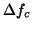
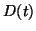

Next: Equation of motion of
Up: Virtual AFM
Previous: Virtual AFM
Contents
The virtual AFM was built on the basis of the precise experimental
determination of the transfer function and impulse response of each
element of the real AFM in order to reproduce as precisely as possible
the experimental behaviours. A room temperature commercial AFM/STM
[21] was used with its standard electronic control system,
except for the frequency demodulator which was replaced by a digital
Phase Locked Loop (PLL) based frequency demodulator [22].
The block diagram of the system is shown in figure 6.
Figure 6:
Schematic of the FM-AFM.
|
|
FM-AFM involves two control loops:
- The first one is supposed to maintain the cantilever oscillation amplitude
at a preset value
 (typically from a few nm to tens of nm).
This is achieved by an Automatic Gain Control block (AGC), which acts
on the power delivered to the cantilever excitation piezoelectric
ceramics. This power can be made proportional to the power dissipated
by the tip-surface interaction by a proper setting of the phase of
the excitation drive of the cantilever [23,24,25].
It is used to produce dissipation images.
(typically from a few nm to tens of nm).
This is achieved by an Automatic Gain Control block (AGC), which acts
on the power delivered to the cantilever excitation piezoelectric
ceramics. This power can be made proportional to the power dissipated
by the tip-surface interaction by a proper setting of the phase of
the excitation drive of the cantilever [23,24,25].
It is used to produce dissipation images.
- The second one is supposed to maintain the resonance frequency shift
induced by the tip-surface interaction at a preset value

(typically from a few Hz to hundreds of Hz). This is achieved by an
Automatic Distance Control block (ADC), which adjusts the tip-surface
distance 
. It is used to produce "topographic"
images.
Subsections
Next: Equation of motion of
Up: Virtual AFM
Previous: Virtual AFM
Contents
Lev Kantorovich
2005-08-04